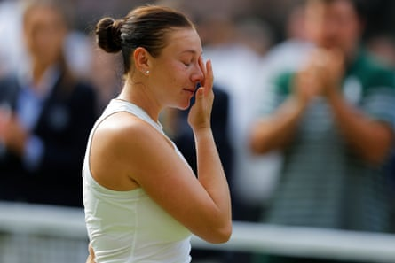
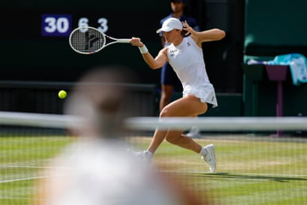
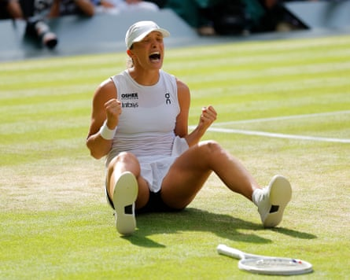

Amanda Anisimova arrived in her first grand slam final in some of the best form of her career, but she fell apart under pressure in front of one of the greatest big-match players the sport has ever seen as Iga Swiatek inflicted a historic 6-0, 6-0 victory in 57 minutes to claim her long-awaited first Wimbledon title.
This is the first time in the open era that the Wimbledon title has been won with a double bagel. The last 6-0, 6-0 result came in 1911, when the sport barely resembled its current modern form, with Dorothea Lambert Chambers’s dominant win over Dora Boothby in the challenge match era, when the defending champion played just once.
Two days after playing an incredible match to topple the world No 1, Aryna Sabalenka, holding her nerve in so many of the tightest moments, Anisimova simply could not handle the pressure. She had the even greater misfortune of coming up against the one opponent who would never allow her a path back in after her early difficulties in the match.
The tears flow as Amanda Anisimova wilts in the heat of a Centre Court final.Photograph: Tom Jenkins/The Guardian
Swiatek has now won each of her first six grand slam finals, a reflection of her remarkable mental toughness and her readiness to produce her best tennis in the biggest moments. Only Margaret Court and Monica Seles have achieved this feat before her in the Open era.
For so long, grass courts were considered Swiatek’s one weakness. The ball’s low bounce, many believed, was too disruptive to her heavy topspin forehand, her movement was too uncertain and there would always be an opponent capable of blasting her off the court. Sometimes she believed this, too.
At the end of a tremendous fortnight on her least successful surface, Swiatek has proven that a player with her rare talent, discipline and sheer force of will has no limitations to her potential.
The victory marks Swiatek’s sixth grand slam title, which breaks her tie with Martina Hingis and Maria Sharapova. The last female player to reach this milestone was Venus Williams in 2007. Alongside her four French Open triumphs and her victory at the US Open in 2022, Swiatek has now won major titles on all three playing surfaces. Only the Australian Open stands between her and a career grand slam.
Iga Swiatek’s relentless returning smothered Amanda Anisimova.Photograph: Tom Jenkins/The Guardian
The achievement is even more remarkable considering the struggles that directly preceded it. Her painful defeat in the semi-finals of the Paris Olympics at Roland Garros last August had been a psychological blow and her confidence further capitulated after she tested positive for the banned substance trimetazidine.
Iga Swiatek lets out a roar of triumph as she celebrates winning her first Wimbledon title.Photograph: Tom Jenkins/The Guardian
Although Swiatek successfully argued and demonstrated that her melatonin medication was contaminated, the occasion also left a significant mark on her for some time. Having spent much of the past three years sweeping up titles at will, this is the Pole’s first at any level since the 2024 French Open.
From the first game, as Anisimova sprayed three dire unforced errors to lose her serve and her right arm looked heavy, it was clear that the American was struggling. Even before Swiatek herself had time to find any rhythm herself, Anisimova was in freefall and her stream of early, unforced errors yielded a rapid-fire 2-0 lead for Swiatek.
While so many players over the years have wilted under the pressure of grand slam finals, Swiatek’s ability to constantly find her best tennis on these occasions is a remarkable trait.
As Anisimova’s errors continued to pile up, drawing gasps from the crowd, Swiatek left her with no chance to find a way. Swiatek smothered Anisimova with her brilliant, relentless returning, she steered the ball into awkward positions and she served well. She kept her unforced error count extremely low. She showed why she will go down as one of the greatest tennis players in history.